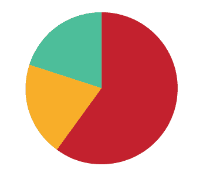

The purpose of the upgraded pace maker is to integrate feelings between human beings, thereby contributing to a fuller life experience.
The pace maker is an instrument that is planted in the body and helps stabilize pulse and blood pressure in people with heart problems. The pace maker measures the pulse and fixes deviations. In the project, I proposed that the pace maker be upgraded by adding a new feature, a transmitter-receiver that can send information to another place outside the body. By sending information between bodies, people could connect to one another in such a way that they can feel what the other person feels at the same time.
In the future there will be a lot of experimentation in the field of artificial body parts, not just in the physical sense, but in the mental sense and the relationship between the two. Connecting people is no longer a question of relationships, love, or DNA. It's a question of relying on each other, of taking care of each other, and feeling connected at every moment. Such developments could also bear implications on parent-child and other interfamilial relationships, keeping in touch, and worrying less. They could also connect people in emergency situations requiring that one partner know what is happening with the other at a critical moment.
The upgraded pace maker takes several measurements:
By adding and analyzing these measurements, we can detect body states and emotions.
Project finished on October, 2010

{kind=link}